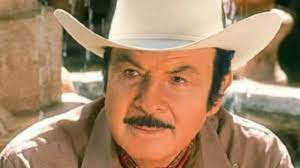

PelisAguilar
PelisAguilar es una pagina destinada a la leyenda Antonio Aguilar quien fue un cantante, actor, productor, guionista y cineasta mexicano. Su discografía ha sobrepasado los 160 álbumes con ventas de más de 25 millones de copias. Al despuntar la década de los 50 debutó como actor en el cine. En esta pagina podras encontrar un catalogo con las peliculas de este celebre personaje de la historia Mexicana.